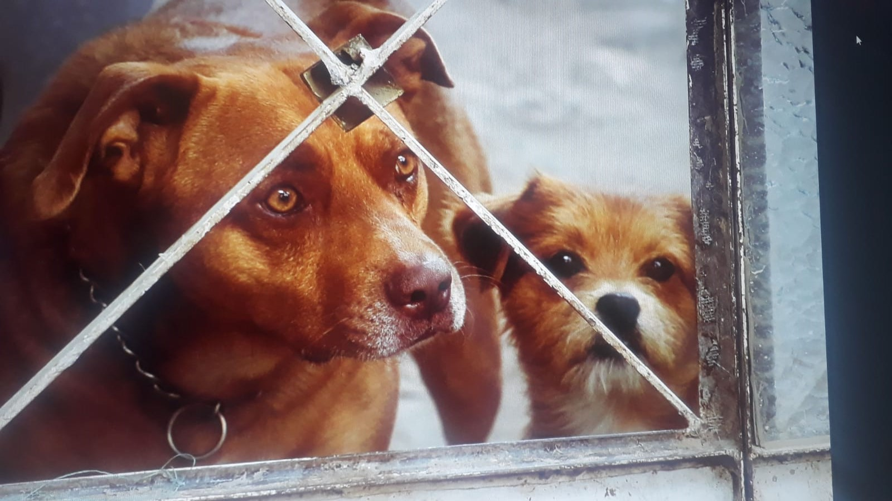

|
FOTOGRAFÍA
|
MAQUILLAJE | COMPARTIR TIEMPO CON MIS MASCOTAS |
|---|---|---|
|
Durante mis tiempos libres, aprendi conceptos sobre fotografia y videos.Pues mi papá y amigos trabajan en el rubro. |
Desde pequeña me llamó mucho la atención el mundo del maquillaje y realice un emprendimiento del mismo |
Siempre que puedo los consiento y los mimo mucho. Tengo 2 bendiciones y uno si le gusta tomarse fotos y al otro no por lo que es muy dificl conseguir una foto con el, a menos que este durmiendo |

|
 |